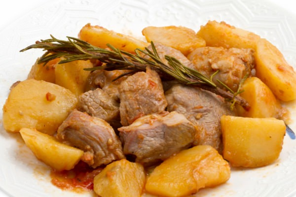

М’ясо, тушковане з картоплею в мультиварці

Інгредієнти:
-
Кіло картоплі
-
430 г яловичини
-
2 шт. томатів і морквини
-
Цибулина
-
Сіль
-
Спеції
-
1 л води
-
Зелень.
Рецепт приготування:
- Першими в промаслений чашу мультиварки викладаються середні кубики картоплі, попередньо вимочені в холодній воді близько години.
- Зверху йдуть дрібні шматочки моркви і цибулі.
- Потім розподіляються шматочки помідорів разом зі шкіркою і скибочки яловичини.
- Маса посипається сіллю, перцем, заливається гарячою водою.
- У програмі «Гасіння» частування нудиться 80 – 90 хвилин.
Подається картоплю з м’ясом і великою кількістю свіжої подрібненої зелені. Окремо сервіруються скибочки бородінського хліба з класичним соусом песто.